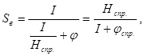
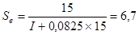
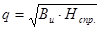
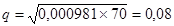
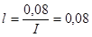
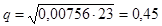
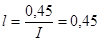

ВЕДОМСТВЕННЫЕ СТРОИТЕЛЬНЫЕ НОРМЫ
ПРИЧАЛЬНЫЕ КОМПЛЕКСЫ
ДЛЯ ПЕРЕГРУЗКИ НЕФТИ
И НЕФТЕПРОДУКТОВ
ПРОТИВОПОЖАРНАЯ ЗАЩИТА
НОРМЫ ПРОЕКТИРОВАНИЯ
ВСН 12-87
Минморфлот СССР
МИНИСТЕРСТВО МОРСКОГО ФЛОТА СССР
|
РАЗРАБОТАНЫ |
Государственным проектно-изыскательским и научно-исследовательским институтом морского транспорта «Союзморниипроект» |
|
|
Главный инженер |
Ю. А. Ильницкий |
|
|
Начальник отдела стандартизации и метрологии |
||
|
М. И. Калашников |
||
|
Ответственный исполнитель |
||
|
Главный специалист |
Г. Ф. Баранов |
|
|
Исполнитель |
В. И. Ярошенко |
|
|
Одесским филиалом института |
||
|
Главный инженер |
В. М. Таран |
|
|
Исполнители |
Г. Ф. Колесников |
|
|
ВНЕСЕНЫ |
В/О «Морстройзагранпоставка» |
|
|
Заместитель председателя |
М. Г. Тетенко |
|
|
СОГЛАСОВАНЫ |
Госстроем СССР |
|
|
ГУПО МВД СССР |
||
|
Госкомнефтепродуктом РСФСР |
||
|
Миннефтепромом СССР |
||
|
Министерство |
Ведомственные строительные нормы |
ВСН 12-87 |
|
Причальные
комплексы перегрузки нефти и нефтепродуктов. Противопожарная защита. |
Минморфлот СССР |
|
|
Вводится впервые |
Нормы распространяются на проектирование системы автоматической противопожарной защиты (САПЗ) причального комплекса для перегрузки нефти и нефтепродуктов в морских портах Минморфлота СССР.
Настоящие нормы должны соблюдаться при проектировании противопожарной защиты вновь строящихся, реконструируемых и технических перевооружаемых причальных комплексов.
При проектировании системы противопожарной защиты причальных комплексов следует также руководствоваться требованиями, установленными строительными нормами и правилами, государственными стандартами, инструкциями, "Правилами перевозки нефти и нефтепродуктов на танкерах морского флота", «Общими правилами морских торговых и рыбных портов», нормами технологического проектирования морских портов и другими действующими нормативными документами, утвержденными в установленном порядке. Перечень нормативных документов приведен в справочном приложении 1.
Тушение пожара на стоящем у причала танкере предусматривается мобильными средствами при немедленном отводе танкера на рейд, для чего любая нефтегавань должна быть обеспечена плавсредствами с системами водопенного тушения и водяного орошения, отвечающими требованиям, изложенным в приложении 2.
|
Внесены |
Утверждены
Министерством морского флота
СССР |
Срок введения |
Настоящие нормы не распространяются на следующие сооружения:
сливо-наливные причалы для перегрузки сжиженных газов, органических кислот, спиртов и других полярных легковоспламеняющихся и горючих жидкостей, свойства которых, в том числе по взрывопожарной опасности, несходны с аналогичными свойствами нефти и нефтепродуктов (справочное приложение 3);
береговые объекты комплекса, требования к противопожарной защите которых устанавливаются нормативными документами, утвержденными или согласованными Госстроем СССР;
стационарные судовые системы пожаротушения танкера.
Примечание. Системы пожаротушения танкера, противопожарные устройства и оборудование на них должны отвечать требованиям ОСТ 5.5491-80, «Правил классификации и постройки морских судов», Регистра СССР и «Правил перевозки нефти и нефтепродуктов на танкерах морского флота».
1.1. Причальные комплексы, на которые распространяются настоящие нормы, включают:
причалы (пироны) и причальные сооружения, размещенные на них служебные помещения, швартовые и отбойные устройства;
технологическую (оперативную) площадку причала (пирса) с размещенными на ней перегрузочным оборудованием (в том числе шлангующими устройствами), грузовыми и бункеровочными трубопроводами.
1.2. При проектировании причальных комплексов перегрузки нефти и нефтепродуктов следует предусматривать устройство САПЗ, обеспечивающей тушение пожара на технологической площадке причального комплекса либо в любой точке причала (пирса).
1.3. При проектировании САПЗ причального комплекса в расчет следует принимать один пожар, независимо от количества причалов и одновременно обрабатываемых танкеров. При обслуживании САПЗ причального комплекса и нефтебазы принимается 2 пожара - один на танкере и второй на нефтебазе, если нефтебаза I-й и II-й категории по СНиП II-106-79.
1.4. САПЗ причального комплекса является взаимоувязанной частью порта и нефтебазы. Управление САПЗ портовой части должно осуществляться с центрального поста диспетчерской причальных комплексов.
1.5. Проектирование САПЗ зданий и сооружений (кроме сооружений технологической площадки) причального комплекса выполняется в соответствии с главами СНиП 2.04.02-84 и СНиП 2.04.09-84 с учетом настоящих норм.
1.6. Вид пожарной техники, ее количество и штаты пожарной охраны порта устанавливаются заданием на проектирование, по согласованию с органами государственного пожарного надзора, и другими заинтересованными организациями.
2.1. САПЗ причального комплекса предназначена для автоматического обнаружения и извещения о возникновении очага пожара на технологической площадке, автоматического тушения его воздушно-механической лентой, подачи воды для создания водяной завесы, предотвращающей распространение огня с причала на танкер либо наоборот, охлаждения водой несущих металлических конструкций причала (при их наличии), а также подачи воды для наружного пожаротушения зданий и сооружений, размещенных на технологической площадке.
2.2. САПЗ состоит из:
системы обнаружения и сообщения о пожаре (автоматическая пожарная сигнализация);
пожарной насосной станции подачи пресной воды (при недостаточном напоре в водопроводной сети) либо с устройством для забора морской воды из акватории, расположенного на берегу или непосредственно на причале (пирсе);
системы автоматического, дистанционного и местного управления насосными станциями;
резервуаров для хранения пенообразователя или его раствора;
наружных сетей трубопроводов (постоянно заполненных водой и раствором пенообразователя или сухих) с гидрантами;
системы растворопроводов со стационарно установленными пеногенераторами для тушения пожара на технологической площадке;
линии водяной завесы причала (пирса).
Принципиальные схемы САПЗ и ее элементов приведены на рис. 1-4.
Рис. 1. Принципиальная схема САПЗ с водяной завесой.
1. Гребенка подключения пожарных машин или плавсредств,
2. Пожарные гидранты или распределительные гребенки на подводящем растворопроводе,
3. Растворопровод,
4. Пожарные гидранты или распределительные гребенки на водопроводе,
5. Водопровод,
6. Узел управления,
7. Вентиль для опорожнения,
8. Питающий трубопровод,
9. Водяная завеса,
10. Пеногенераторы.
Принципиальная
схема насосной станции для подачи раствора
пенообразователя с насосами - дозаторами пенообразователя
Рис. 2
1. Насос-дозатор;
2. Насос для раствора пенообразователя;
3. Резервуар для воды;
4. Резервуар с пенообразователем;
5. Дозировочная шайба для расхода Q1;
6. Дозировочная шайба для расхода Q2;
7. Задвижка с электроприводом;
8. Щит управления;
9. Шкаф управления и автоматики;
10. Водо-воздушный бак;
11. Насос для пополнения водо-воздушного бака раствором пенообразователя
Условные обозначения: РП - растворопенопровод;
П - пенопровод.
Принципиальная схема насосной станции с дозированием
пенообразователя смесителями эжекторного типа
Рис. 3
1. Насос для раствора пенообразователя;
2. Резервуар для воды;
3. Резервуар для пенообразователя;
4. Эжектор-смеситель производительностью Q1;
5. Эжектор-смеситель производительностью Q2;
6. Щит управления;
7. Шкаф управления и автоматики;
8. Водо-воздушный бак;
9. Насос для пополнения водо-воздушного бака раствором пенообразователя.
Условные обозначения: РП - растворопенопровод;
П - пенопровод.
Принципиальная схема пожарной насосной с подачей готового раствора пенообразователя и воды в систему САПЗ
Рис. 4
1. Насос подачи раствора пенообразователя;
2. Насос подачи воды;
3. Резервуар с раствором пенообразователя;
4. Резервуар для воды;
5. Водо-воздушный бак;
6. Щит управления;
7. Пусковое устройство;
8. Предохранительный клапан.
Примечания: 1. Прилагаемые в инструкции фрагменты (рисунки) автоматических систем при проектировании корректируются с учетом привязки и назначения защищенного объекта (здания, сооружения), а также местных условий и принятого типа побудителя установки САПЗ.
2. Принципиальная схема автономных систем САПЗ, установок для поддержания давления в растворопенопроводе и подачи его в систему, а также подачи раствора пенообразователя с установкой клапана БК или КБ2ЭМ и схемы автоматики и электрической системы управления САПЗ приведены в разделах 1¸10 "Временных рекомендаций по проектированию стационарных систем автоматического тушения пожаров ¼" ВНИИПО МВД СССР, М. 1974 (поз. 20 перечня нормативно-технических документов).
2.3. САПЗ должна быть единой для всех защищаемых сооружений причального комплекса и береговых объектов, в том числе нефтебазы. Для нефтебаз, расположенных на расстоянии 1 км и более от причального комплекса устройство общей САПЗ определяется на основании экономической целесообразности.
Для небольших объектов или отдельно стоящих зданий и сооружений допускается применение автономной автоматической стационарной системы пожаротушения с использованием противопожарного водопровода.
3.1. В качестве основного средства тушения пожара должна предусматриваться воздушно-механическая пена средней кратности (80-100) с использованием пенообразователя на морской или пресной воде. Характеристики пенообразователей приведены в справочном приложении 3.
3.2. САПЗ причального комплекса должны обеспечивать тушение расчетного пожара на технологической площадке или танкере по наибольшему требуемому на тушение расходу*.
__________
* Если существующие системы САПЗ обеспечат пожаротушение технологической площадки и нефтебазы, потребный расход воды и пенообразователя для тушения пожара на танкере из САПЗ (см. рис. 1), при реконструкции и техническом перевооружении существующих причальных комплексов, допускается снижать на 50 %.
Расчетная площадь тушения определяется равной площади горизонтального сечения наибольшего защищаемого помещения (танка). Интенсивность подачи пены 0,1 л/сек. на м2 (табл. 3.7.1.3. и п. 3.7.1.1. Регистра СССР).
3.3. На технологической площадке причала необходимо предусматривать установку стационарных пеногенераторов, обеспечивающих подачу пены на всю площадь технологической площадки, но не менее, чем на 500 м2.
3.4. Установка водопенного тушения должна обеспечивать подачу раствора пенообразователя с интенсивностью не менее 0,08 л/с на м2.
3.5. Для создания минимального слоя пены, обладающего изолирующей способностью при тушении пожара, высота бортиков ограждения технологической площадки должна быть не менее 0,4 м. Бортик устанавливается по контуру технологической площадки, не сокращаю пожарные проезды.
3.6. Для САПЗ должны применяться стационарно установленные пеногенераторы типа ГПС с подключением их к распределительному трубопроводу раствора пенообразователя при помощи резьбовых соединений.
3.7. Пеногенераторы устанавливаются равномерно по периметру площадки с таким расчетом, чтобы пена подавалась преимущественно на шлангующие устройства (стендеры), задвижки, продуктовые трубопроводы и другие сооружения транспорта нефтепродукта.
3.8. Расчетное время работы установки по тушению пожара следует принимать равным 10 мин., а запас пенообразователя и воды на приготовление раствора пенообразователя из условния обеспечения трехкратного раствора. При этом следует учитывать потребность в дополнительном количестве раствора пенообразрвателя для заполнения сухих растворопенопроводов и создания его запаса не менее 10 т (п. 30 приложения 13 "Правил перевозки ¼ ").
3.9. Процентное содержание пенообразователя в растворе устанавливается в зависимости от вида пенообразователя и применяемой воды (пресной или морской) в соответствии с приложением 4. С целью повышения устойчивости воздушно-механической пены средней кратности (80-100) от влияния на нее морской воды, концентрацию пенообразователя в растворе необходимо принимать не менее 12 %.
3.10. С целью регулирования подачи пенообразователя в зависимости от расчетного расхода допускается использование дозирующих шайб на пенопроводах (см. рис. 2).
3.11. По расчетной длине следует предусматривать устройство водяной завесы, с прокладкой трубопроводов вдоль бортика по линии кордона причала с внутренней стороны. В водяной завесе может быть применена морская вода.
3.12. Расчетную длину линии водяной завесы следует принимать равной длине выступающей части причала технологической площадки плюс 10 м в обе стороны, либо длине цилиндрической вставки расчетного танкера при сплошной причальной стенке.
3.13. Расход воды, оросители (насадки) завесы, напор в сети и внутренний диаметр питающего (распределительного) трубопровода следует выбирать по расчету, обеспечивая сплошную водяную завесу, превышающую не менее, чем на 3 м грузовую палубу в начале загрузки танкера по высоте. Свободный напор в сети трубопроводов водяной завесы должен быть не менее 0,7 МПа.
Расстояние между оросителями (насадками) не должно превышать 0,5 м. Минимальная интенсивность подачи воды водяной завесой должна быть не менее 1 л/с на 1 м ее длины.
3.14. При проектировании питательных (распределительных) трубопроводов водяной завесы и водопенной установки необходимо обеспечивать выполнение следующих требований:
питающий (распределительный) трубопровод следует проектировать кольцевым, в том числе и ответвления его на отдельные участки (технологическая площадка и т.д.). Подключение питающих трубопроводов к подводящей сети производится через задвижки с электроприводом или клапаны группового действия;
узлы управления следует устанавливать в непосредственной близости от трубопроводов подводящей сети, а при водозаполненной подводящей сети - отапливаемом помещении с температурой не ниже 5 °С;
питающие и распределительные трубопроводы следует проектировать с уклоном к узлам управления. Узлы управления должны оборудоваться устройством для опорожнения трубопроводов.
3.15. При наличии металлических несущих гидротехнических конструкций причала и эстакад с трубопроводами кольцевая сеть противопожарного водопровода, с учетом расхода воды для работы водяной завесы, в соответствии с требованиями п. 2.1, должна обеспечивать расход воды на охлаждение этих металлических конструкций из расчета 0,05 л/с на 1,0 м2 или 0,1 л/с на 1,0 м длины причала в пределах технологической площадки, а также 10 м за ее пределами.
При размещении на технологической площадке зданий и сооружений (операторные помещения, канализационные насосные станции, очистные сооружения и другие), связанных с работой перегрузочного комплекса, сеть пожарного водопровода, с учетом требований СНиП II-106-79, должна обеспечить расход воды на наружное и внутреннее пожаротушение этих зданий и сооружений.
3.16. Проектирование водопровода и зданий насосных станций следует осуществлять в соответствии со СНиП 2.04.02-84.
3.17. Противопожарный водопровод должен обеспечить одновременно орошение конструкции по п. 3.15 и тушение сооружений комплекса (но не менее 50 л/сек) и подачу воды на водяную завесу.
3.18. Сеть растворопроводов может быть постоянно заполненной раствором пенообразователя или сухотрубной (не заполненной раствором). Возможность применения сухотрубной системы определяется расчетом по допускаемой инерционности системы.
3.19. При проектировании системы пожаротушения с сухими растворопроводами инерционность всей системы САПЗ с момента возникновения пожара с учетом инерционности срабатывания извещателей (датчиков), не должна превышать 3 мин.
3.20. На подводящих трубопроводах (водопроводных и растворопенопроводных) у каждой технологической площадки следует предусматривать установку пожарных гидрантов или распределительных гребенок с соединительными головками диаметром 70 мм для подключения пожарных мобильных средств (автомашин, катеров и т.п.) с запорной арматурой, обеспечивающих подачу воды и раствора пенообразователя в их сеть.
3.21. Запорная трубопроводная арматура (задвижки, клапаны), а также пожарные гидранты рожки, гребенки и другое пожарное оборудование должна быть выполнена по I классу герметичности (ГОСТ 9544-75) в исполнении, предназначенном для эксплуатации на открытом воздухе в микроклиматических районах с морским климатом в соответствии с ГОСТ 15150-69*.
3.22. Пожарные гидранты или распределительные гребенки устанавливаются не более 40 м от бортика технологической площадки.
3.23. Количество и места установки пожарных гидрантов или распределительных гребенок принимают по расчету, исходя из требуемых расходов воды и раствора пенообразователя на тушение пожара, но не менее двух на каждую технологическую площадку.
3.24. Распределительные гребенки оборудуются общей задвижкой, установленной непосредственно у подводящего трубопровода, а также задвижками (вентилями) у каждой соединительной головки, в том числе и устройством для опорожнения стояка.
3.25. На каждой технологической площадке следует предусматривать пожарный пост с комплектом пожарного оборудования, согласно ГОСТ 12.4.009-83 и п. 30 приложения 13 "Правил перевозки ¼ ".
3.26. На причальном комплексе, в соответствии с требованиями СНиП II-106-79, "Правил перевозки нефти и нефтепродуктов танкерами морского флота" и других нормативных и руководящих документов ММФ, следует предусматривать устройство проезда для пожарных автомобилей шириной 4,5 м, а также площадки для разворота их размером не менее 12´12 м, в том числе для размещения на них не менее двух пожарных автомобилей для забора морской воды из акватории порта и подачи ее к месту очага пожара.
4.1. Для предотвращения проливов нефтепродуктов на технологическую площадку причала (пирса) при аварии, а также отсоединения шлангующих устройств от приемных патрубков танкера, технологические трубопроводы и стендеры должны быть оборудованы быстро закрывающимися клапанами, а также устройствами защиты от гидравлического удара.
4.2. При получении сигнала о возникновении пожара на причальном комплексе, технологической площадке или танкере автоматически подается команда на автоматическую остановку продуктовых насосов с открытием задвижки на обводном сбросном трубопроводе в резервуар, закрытие отсекающих задвижек технологических трубопроводов, прекращение всех погрузочно-разгрузочных операций, закрытие секционных клапанов у шлангующих устройств, а после закрытия секционных клапанов, подается команда на отсоединение шлангующих устройств (стендеров) и затем на сброс швартовых концов.
4.3. На нефтепричалах, у которых обрабатываются танкеры грузоподъемностью 45 тыс. т и более, необходимо предусматривать, взамен швартовых тумб, швартовные устройства быстро отдающегося типа (откидные гаки) для обеспечения возможности быстрого отвода танкера при возникновении пожара на нем или на причале.
4.4. Быстро отдающиеся швартовые гаки должны быть сблокированы с положением отсекающих задвижек на технологических трубопроводах и шлангующих устройств (стендеров), отсоединенных от приемных патрубков танкера. При этом, в случае необходимого экстренного сброса швартовных концов танкера во время подачи на танкер жидкого груза и присоединенных к нему шлангующих устройств, действие быстроотдающихся гаков выполняется по установленной программе: закрытие задвижек, отсоединение и отвод стендеров и лишь затем - отдача швартовов.
5.1. При проектировании САПЗ следует предусматривать единую систему пожарной сигнализации, автоматики, блокировки и телефонной связи, объединяющую системы противопожарной защиты нефтебазы, причального комплекса с технологической площадкой, а также стоящего у причала танкера.
5.2. При получении сигнала о возникновении пожара на причальном комплексе, технологической площадке или танкере автоматически включается водяная завеса.
5.3. САПЗ должна быть обеспечена автоматическим, дистанционным и местным ручным управлением. Автоматическое управление осуществляется при срабатывании пожарных извещателей (датчиков). Дистанционный пуск может осуществляться с операторского или диспетчерского пункта причала (пирса), на которых имеется постоянный дежурный персонал, и с технологической площадки от узлов управления установок, а местное (ручное) - из насосной станции нефтебазы.
5.4. Пожарные извещатели (датчики) размещаются на технологической площадке и внутри защищаемых помещений зданий причала (пирса). Расстояние между автоматическими извещателями (датчиками), устанавливаемыми на технологической площадке, должно быть не более 6 м, а расстояние между извещателями ручного действия, устанавливаемыми по периметру причального сооружения - не более 100 м. Количество и схемы подключения, тип пожарных извещателей определяется с учетом требований главы СНиП 2.04.09-84.
5.5. Объекты и сооружения нефтегавани должны быть соединены прямой телефонной связью (миную коммутаторы) с обслуживающим причальный комплекс пожарным депо, насосной пожарной станцией и помещением узла приготовления раствора пенообразователя, продуктовой насосной станцией, диспетчером нефтерайона, оператором припортовой нефтебазы и нефтеналивным причалом (пирсом). При этом пожарное депо должно иметь прямую телефонную связь с пунктом пожарной связи города.
5.6. Диспетчер (оператор) причального комплекса должен быть обеспечен прямой связью с обслуживающим пожарным депо, пунктом пожарной связи города, вахтенным дежурным на стоящем под погрузкой танкере. Кроме того, на танкере, пришвартованном к причалу (пирсу), должен устанавливаться выносной пожарный извещатель типа ИПР, включаемый через искробезопасное устройство, - сигнализатор (ИУС) для подачи сигнала о пожаре на танкерах и автоматического включения САПЗ.
5.7. На причале (пирсе) следует предусматривать пункт подключения к системе громкоговорящей связи штабного пожарного автомобиля руководителя тушения пожара.
(справочное)
ПЕРЕЧЕНЬ
нормативно-технических документов
1. СНиП 2.01.02-85. Противопожарные нормы.
2. СНиП 2.04.02-84. Водоснабжение. Наружные сети и сооружения.
3. СНиП 2.04.09-84. Пожарная автоматика зданий и сооружений.
4. СНиП II-60-75. Планировка и застройка городов, поселков и сельских населенных пунктов.
5. СНиП II-89-80. Генеральные планы промышленных предприятий.
6. СНиП II-106-79. Склады нефти и нефтепродуктов.
7. СН 527-80. Инструкция по проектированию технологических стальных трубопроводов Ру до 10 МПа.
8. ГОСТ 12.1.004-85. Пожарная безопасность. Общие требования.
9. ГОСТ 12.4.009-83. Пожарная техника для защиты объектов. Основные виды. Размещение и обслуживание.
10. ОНТП 24-86/МВД СССР. Определение категорий помещений и зданий по взрывопожарной и пожарной опасности.
11. РТМ 25.488-82. Установки пожаротушения автоматические и установки пожарной, охранной и охранно-пожарной сигнализации. Нормативы численности персонала, занимающегося техническим обслуживанием и текущим ремонтом.
12. РД 31.31.37-78. Нормы технологического проектирования морских портов.
13. РД 31.82.01-79. Требования безопасности труда, которые должны учитываться при проектировании морских портов.
14. Правила перевозки нефти и нефтепродуктов на танкерах морского флота. М., 1981, Минморфлот.
15. Общие правила морских торговых и рыбных портов Союза ССР.
16. Инструкция по применению, транспортировке, хранению и проверке качества пенообразователя. ВНИИПО МВД СССР. М., 1976.
17. Временные рекомендации по проектированию систем автоматической защиты открытых нефтеперерабатывающих заводов. ВНИИПО МВД СССР. М., 1978.
18. Правила пожарной безопасности при эксплуатации предприятий Госкомнефтепродукта СССР. Изд-во "Недра", М., 1985.
19. Методы оценки экономической эффективности затрат на средства противопожарной защиты. Госстрой СССР, М., 1985.
20. Временные рекомендации по проектированию стационарных автоматических систем тушения пожаров нефти и нефтепродуктов в резервуарных парках и насосных станциях. ВНИИПО МВД СССР, института Гипротрубопровод Миннефтепрома СССР, М., 1974 - (дополнение к главе СНиП II-106-79).
21. "Правила классификации и постройки морских судов" Регистр СССР, 1985 г.
22. ОСТ 5.5491-80 "Система пенного пожаротушения".
(обязательное)
Требования к
пожарному оборудованию мобильных
плавсредств, участвующих в тушении пожара на танкере
1. Мобильные плавучие средства должны быть оборудованы системой водопенного тушения, рассчитанной на пожаротушение расчетного танкера, обрабатываемого в нефтегавани и отводимого от причала во время пожара. Расчет пенотушения производится в соответствии с п. 3.1, п. 3.2, п. 3.4, п. 3.8 и 3.9 настоящих ВСН, а подача воды на охлаждение из лафетных стволов - в соответствии с ОСТ 5.5491-80 "Система пенного пожаротушения".
2. Высота расположения генераторов пены и лафетных водяных стволов должна быть переменной и достигать уровня на 3 м выше палубы порожнего расчетного танкера. Для этих целей следует использовать телескопические подъемники.
3. Радиус действия генераторов пены и лафетных стволов принимается из условия подачи воздушно-механической пены и воды в любую точку расчетной площади очага пожара на расчетном танкере.
4. На мобильных плавучих средствах должны быть предусмотрены гребенки с соединительными головками диаметром 70 мм (см. п. 3.21) для возможности подключения в САПЗ.
(справочное)
ХАРАКТЕРИСТИКА
взрывопожарной опасности нефти и нефтепродуктов
|
Жидкость |
Относительная плотность (при температуре 20 °С) |
Температура, °С |
Пределы взрываемости паров по отношению к воздуху |
||||
|
вспышки |
самовоспламенения |
Объемные, м2/м3 |
Температурные, °С |
||||
|
нижний |
верхний |
нижний |
верхний |
||||
|
1 |
2 |
3 |
4 |
5 |
6 |
7 |
8 |
|
I. Нефть сырая |
|||||||
|
Зольнистая |
0,8400 |
-35 |
- |
- |
- |
-34 |
-14 |
|
Карадагская |
0,8310 |
-21 |
320 |
- |
- |
-21 |
19 |
|
Туймазинская |
0,8520 |
-20 |
320 |
- |
- |
-21 |
-8 |
|
Сураханская, месторождения Гаусаны |
0,8581 |
-5 |
330 |
- |
- |
5 |
24 |
|
Бибиэйбантская легкая |
0,8670 |
5 |
260 |
- |
- |
2 |
26 |
|
Сураханская отборная |
0,8518 |
12 |
300 |
- |
- |
12 |
60 |
|
Сураханская обыкновенная |
0,8648 |
13 |
270 |
- |
- |
13 |
56 |
|
Бинагадинская |
0,8064 |
18 |
300 |
- |
- |
12 |
39 |
|
Сураханская масляная |
0,8880 |
22 |
300 |
- |
- |
18 |
43 |
|
Балахинская тяжелая |
0,9170 |
23 |
310 |
- |
- |
23 |
50 |
|
Щубакинская |
0,9161 |
26 |
375 |
- |
- |
22 |
53 |
|
Бибиэйбантская тяжелая |
0,8859 |
27 |
310 |
- |
- |
26 |
57 |
|
Карачухарская (нижнего отдела) |
0,8742 |
34 |
290 |
- |
- |
31 |
80 |
|
2. Топливо дизельное |
|||||||
|
Арктическое марки ДА |
0,8471 |
64 |
330 |
- |
- |
57 |
105 |
|
Автотракторное марки I |
0,8670 |
71 |
310 |
- |
- |
62 |
100 |
|
Зимнее марки ДЗ для быстроходных дизелей |
0,8310 |
78 |
240 |
- |
- |
69 |
119 |
|
Топливо для быстроходных дизелей, специальное ДС |
0,8440 |
92 |
345 |
- |
- |
76 |
115 |
|
Топливо для тихоходных дизелей, ДТ-I |
0,9168 |
110 |
370 |
- |
- |
99 |
137 |
|
Топливо дизельное ДТ-2 |
0,9212 |
110 |
350 |
- |
- |
91 |
135 |
|
3. Топливо моторное |
|||||||
|
Топливо мото (мототопливо) |
0,7740 |
-38 |
250 |
- |
- |
-38 |
-7 |
|
Топливо Т-2 (малосернистое) |
0,7900 |
-25 |
300 |
- |
- |
-25 |
18 |
|
Топливо Т-4 (малосернистое) |
0,7740 |
-19 |
340 |
- |
- |
-8 |
4 |
|
Топливо Т-I (сернистых нефтей) |
0,7780 |
29 |
290 |
- |
- |
24 |
59 |
|
Топливо Т-I (бакинское) |
0,8130 |
28 |
345 |
- |
- |
25 |
57 |
|
Топливо Т-I (выщелоченное) |
0,8240 |
31 |
290 |
- |
- |
27 |
59 |
|
4. Керосин |
|||||||
|
Осветительный |
0,8100 |
48 |
265 |
- |
- |
45 |
96 |
|
Осветительный |
0,8340 |
58 |
250 |
1,40 |
7,50 |
57 |
87 |
|
Тракторный |
0,8190 |
28 |
260 |
- |
- |
26 |
26 |
|
5. Бензин |
|||||||
|
Автомобильный А-74 |
0,7300 |
-36 |
300 |
0,79 |
5,16 |
-36 |
-7 |
|
Автомобильный А-66 |
0,7280 |
-39 |
255 |
0,76 |
5,03 |
-39 |
-8 |
|
Авиационный Б-70 |
0,7450 |
-34 |
300 |
0,79 |
5,16 |
-34 |
-8 |
|
Марки Б-91/115 |
0,7295 |
-38 |
453 |
- |
- |
-38 |
+5 |
|
Авиационный (каталитический) Б-95 |
0,7362 |
-37 |
380 |
0,98 |
5,48 |
-37 |
-10 |
|
Авиационный (каталитический) Б-100 |
0,7282 |
-34 |
474 |
0,98 |
5,48 |
-34 |
-4 |
|
Бензин-растворитель для резиновой промышленности |
0,7220 |
-17 |
350 |
1,10 |
5,40 |
-17 |
10 |
|
6. Прочие нефтепродукты |
|||||||
|
Бензол |
0,8800 |
-14 |
626 |
1,10 |
6,80 |
-14 |
12 |
|
Уайтспирит (бензин-растворитель для лакокрасочной промышленности) |
0,7760 |
35 |
270 |
1,4 |
6,00 |
35 |
68 |
|
Лигроин |
0,7698 |
10 |
380 |
1,40 |
6,00 |
2 |
34 |
(справочное)
КОНЦЕНТРАЦИЯ
ПЕНООБРАЗОВАТЕЛЕЙ В СИСТЕМЕ
ПОЖАРОТУШЕНИЯ (КРАТНОСТЬЮ 1:10
и 80-100)
|
Марка пенообразователя |
Пресная вода, % |
Морская вода, % |
|
ПО-3А "И" |
3 |
6 |
|
ПО-I, ПО-IД |
6 |
12 |
|
ПО-6К |
6 |
12 |
|
"САМПО" |
6 |
12 |
|
"ТЭАС" |
6 |
12 |
|
"Полюс" |
6 |
12 |
|
"Фарелол" |
6 |
12 |
(справочное)
ТАКТИКО-ТЕХНИЧЕСКАЯ
ХАРАКТЕРИСТИКА ГЕНЕРАТОРОВ
ВОЗДУШНО-МЕХАНИЧЕСКОЙ ПЕНЫ СРЕДНЕЙ КРАТНОСТИ
(ГОСТ 12962-80Е и ТУ 78-210-71)
|
Тип пеногенератора |
Давление перед генератором, МПа |
Расход раствора пенообразователя л/с |
Кратность пены к раствору |
Расход пены |
Диаметр пакета соток, м |
Длина с насадком, мм |
Диаметр центробежного насадка, мм |
Масса, кг |
|
ГПС-600 |
0,4-0,6 |
6 |
80-100 |
600 |
320 |
610 |
20 |
4,5 |
|
ГПС-600 |
0,4-0,6 |
6 |
80-100 |
600 |
309 |
725 |
20 |
5,0 |
Воздушно механическая пена кратностью (80-100) на пресной воде.
(рекомендуемое)
РАСЧЕТ
средств тушения пожара разлившихся на поверхности
нефти и нефтепродуктов воздушно-механической пеной
средней кратности (кратность 80-100) с использованием
пресной воды (для нового строительства)
Определить общий расход воды и пенообразователя, необходимое число средств тушения пожара.
Исходные данные:
Площадь технологической площадки 470 м2, длина линии водяной завесы - 330 м, расчетный танкер - проект 1596, род перерабатываемого груза - сырая нефть.
Решение:
В качестве пенопроизводящих аппаратов используются генераторы пены средней кратности ГПС-600 (расход раствора пенообразователя при напоре 0,6 МПа составляет для генератора 6 л/с).
Расчетное время тушения пожара 10 мин. (600 с).
Расход пенообразователя одним ГПС-600 равен 0,36 л/с.
Расход воды на тушение пожара одним ГПС равен 5.64 л/с.
Интенсивность подачи раствора пенообразователя на тушение пожара - 0,08 л/с на 1 м2 площади зеркала горящей жидкости.
В соответствии с п. 3.1 определяем расчетную площадь очага пожара: технологическая площадка - 470 м2, либо площадь наибольшего танка (270 м2 + 270 м2) = 540 м2. Суммарный расход пены для тушения пожара на технологической площадке:
500 ´ 0,08 = 40 л/с
Секундный расход на тушение пожара на танкере:
540 ´ 0,1 = 54 л/с
Для расчетов принимаем наибольший расход - 54 л/с.
Число ГПС-600, обеспечивающее необходимый расход раствора пенообразователя на тушение:
54 : 6 = 9 шт.
Количество пенообразователя, необходимое на тушение в течение 600 с:
9 ´ 0,36 ´ 600 = 1944 л или 1944 ´ 1,1 = 2,138 т
(где 1,1 - плотность пенообразователя).
Количество пенообразователя, необходимое для тушения при трехкратном запасе:
1944 ´ 3 = 5832 л или 5832 ´ 1,1 = 6,415 т
Расходы воды на приготовление раствора пенообразователя для тушения горящей разлившейся жидкости:
5,64 ´ 9 = 50,76 л/с = 50,8 л/сек
(рекомендуемое)
РАСЧЕТ
средств тушения пожара разлившихся на поверхности
нефтепродуктов воздушно-механической пеной средней
кратности (кратность 80-100) с использованием
морской воды (для реконструкции или техперевооружения)
Определить общий расход воды и пенообразователя, необходимое число средств тушения пожара.
Исходные данные:
Площадь технологической площадки 410 м2, длина линии водяной завесы - 330 м, расчетный танкер - проект 1598, род перерабатываемого груза - сырая нефть.
Решение:
В качестве пенопроизводящих аппаратов используются генераторы пены средней кратности ГПС-600 (расход раствора пенообразователя при напоре 0,6 МПа - составляет для одного генератора 6 л/с).
Расчетное время тушения пожара 10 мин. (600 с);
Расход пенообразователя одним ГПС-600 равен 0,72 л/с;
Расход воды на тушение пожара одним ГПС-600 равен 5,28 л/с.
Интенсивность подачи раствора пенообразователя на 1 м2 зеркала горящей жидкости - 0,08 л/с.
В соответствии с п. 3.1 определяем расчетную площадь очага пожара: технологическая площадка - 410 м2, либо суммарная площадь наибольшего танка
(270 м2 + 270 м2) = 540 м2.
В п. 3.1 "Требуемый расход воды и пенообразователя для тушения пожара на танкере снижается на 50 % ¼ ". Отсюда расчетная площадь тушения пожара на танкере - 270 м2 меньше, чем на технологической площадке и менее 500 м2.
Секундный расход раствора пенообразователя на тушение:
500 ´ 0,08 = 40,0 л/с
Число ГПС-600, обеспечивающее необходимый расход раствора пенообразователя на тушение:
40,0 : 6 = 6,6 - принимаем 7 шт.
Количество пенообразователя, необходимое на тушение в течение 600 с:
7 ´ 0,72 ´ 600 = 3024 л или 3,03 ´ 1,1 = 3,33 т
Количество пенообразователя, необходимое для тушения при трехкратном запасе:
3024 ´ 3 = 9072 л или 9,072 ´ 1,1 = 9,979 т
Расходы воды на приготовление раствора пенообразователя для тушения разлившейся жидкости:
5,28 ´ 7 = 36,96 л/с » 37 л/сек
(справочное)
Расчет водяной завесы на причале
Определить общий расход воды и пенообразователя, необходимое число средств тушения пожара.
Исходные данные:
Расчетная длина завесы - 180 м. Высота палубы порожнего танкера составляет 6 м. Напор водяного насоса - 90м.
Диаметр спрыска определяется методом подбора, исходя из минимально-потребной высоты сплошной завесы, превышающей высоту палубы порожнего танкера на 3 м.

где - высота вертикальной струи, м
Нспр. - напор воды у спрыска, м.в.ст.
j - коэффициент, определяемый в зависимости от диаметра спрыска с насадкой (в соответствии с табл. 104 справочника "Проектирование водопроводов").
|
j = 0,0825 при Æ 3 мм; |
hmax = 6,7 м; |
Нтр ³ 15 м.в.ст. |
|
j = 0,0615 при Æ 4 мм; |
hmax = 8,6 м; |
Нтр ³ 18 м.в.ст. |
|
j = 0,0487 при Æ 5 мм; |
hmax = 10,8 мм; |
Нтр ³ 23 м.в.ст. |
|
j = 0,0404 при Æ 6 мм; |
||
|
j = 0,034 при Æ 7 мм |
hmax - максимальная высота струи, используемая из спрыска указанного диаметра, м;
Нтр - минимальный напор, обеспечивающий максимальную высоту струи, м.в.ст.
При необходимой высоте завесы
= 6 + 3 = 9 м
и высоте расположения распределительного трубопровода водяной завесы на отметке 2,6 м.
hmax принимается 6,7 м при диаметре спрыска, равным 5 мм.

Расход воды из спрыска с насадкой определяется по формуле

где q - расход воды в л/с,
Ви - величина расхода воды, зависимая от диаметра спрыска и равна (по табл. 105), л/с
Ви = 0,000981 для Æ 3 мм;
Ви = 0,0031 для Æ 4 мм;
Ви = 0,00756 для Æ 5 мм;
Ви = 0,01568 для Æ 6 мм;
Ви = 0,029 для Æ 7 мм;
Отсюда 
Принимаем q = 1 л/с на 1 м.

При Æ 5 мм Нтр = 23 м.в.ст.


Общий расход определяется в зависимости от диаметра распределительного трубопровода.
СОДЕРЖАНИЕ
2. Состав САПЗ причального комплекса
3. Требования к САПЗ причального комплекса
5. Система автоматического управления, связь и сигнализация
Приложение 1, справочное. Перечень нормативно-технических документов
Приложение 2, обязательное. Требования к пожарному оборудованию мобильных плавсредств
Приложение 3, справочное. Характеристика взрывопожарной опасности нефти и нефтепродуктов
Приложение 4, справочное. Концентрация пенообразователей в системе пожаротушения (кратность 1:10 и 80-100)
Приложение 5, справочное. Тактико-техническая характеристика генераторов воздушно-механической пены средней кратности
Приложение 6, рекомендуемое. Расчет средств тушения пожара разлившихся на поверхности нефти и нефтепродуктов воздушно-механической пеной средней кратности (80-100) с использованием пресной воды
Приложение 7, рекомендуемое. Расчет средств тушения пожара разлившихся на поверхности нефти и нефтепродуктов воздушно-механической пеной средней кратности (80-100) с использованием морской воды
Приложение 8, справочное. Расчет водяной завесы на причале